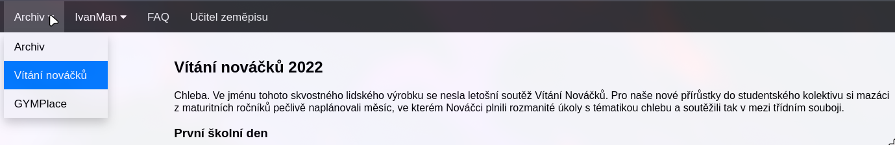
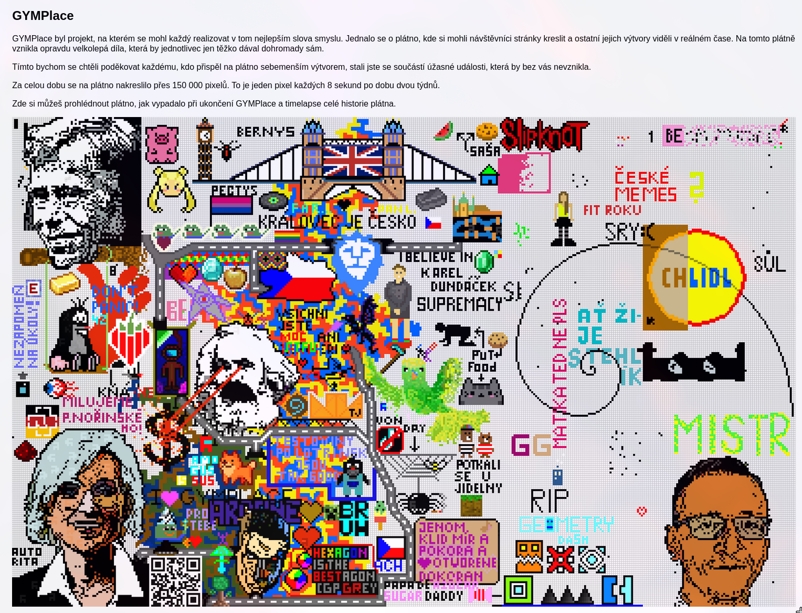
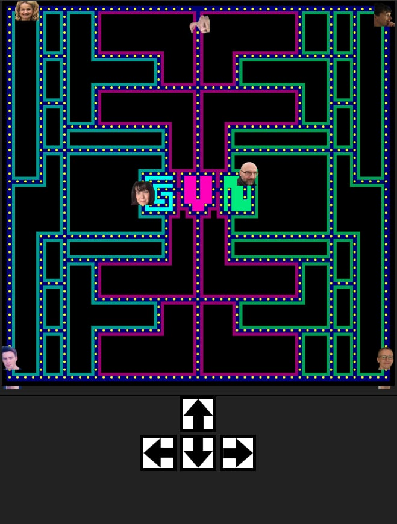

Webová aplikace sloužící pro přehled progressu ve hře Warframe. Původně začala jako semestrální práce, následně se rozrostla v kompletní aplikaci.
Technologie:
Původní myšlenka za celou webovkou - jednoduchý a efektivní způsob, jak ukládat a spravovat soubory napříč zařízeními. Dlouho jsem na něm nic nedělal a zasloužil by si update. Každopádně pořád funguje.
Technologie:
Sada několika miniher, především sloužící na rozdělení lidí do týmů ve hře World of Warfract, nějakým zábavným způsobem. Většinou v rychlosti dáno dohromady za jedno až dvě odpoledne ke spodní hranici funkčnosti.
Multiplayer hra založená na pexesu (takzvaně Pexeso-like), upravená pro potřeby týmů ve WoW.
Technologie:
Nefunguje přes HTTPS kvůli problémům s WebSockets a Cloudflare
Hra založena na hře AZ-kvíz, opět upravená pro potřeby týmů ve WoW.
Technologie:
Pracovní název. Jedná se o karetní hru ve formátu PvPvE, kde hráči bojují proti sobě, ale zároveň se snaží zabít i bosse. Hra je v rané fázi vývoje, každopádně je jádro implementováno a "hratelné".
Technologie:
Jednoduchá chatovací aplikace inspirovaná Messengerem od Facebooku. Vznikla jako školní projekt na předmět Technologie Java.
Technologie:
Vícero menších projektů, ještě ze střední školy, které jsem vytvářel primárně pro vítání prváků. Většina stránky už každopádně nefunguje, především kvůli migraci mezi servery.
Stránka popisující první měsíc na škole. Link
Obdoba v té době populárního r/place - místo, kde si studenti mohli "malovat" na plátno a vytvářet společné dílo v reálném čase. Link
Klon hry Pac-Man, kde hráči ovládají postavu a snaží se sbírat body, zatímco se vyhýbají nepřátelům. Zároveň jsou zahrnuty žebříčky s nejlepšími výsledky. Titulní stránka Leaderboard
Technologie: